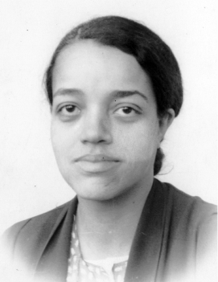

Curiosidades

Dorothy Vaughan foi a primeira supervisora negra da NASA, na área de computação.

Foi uma das pioneiras em computação na maior agência espacial do planeta

Como líder da equipe, ela instruiu novos conceitos aos funcionários, tanto os novos quanto os já existentes..